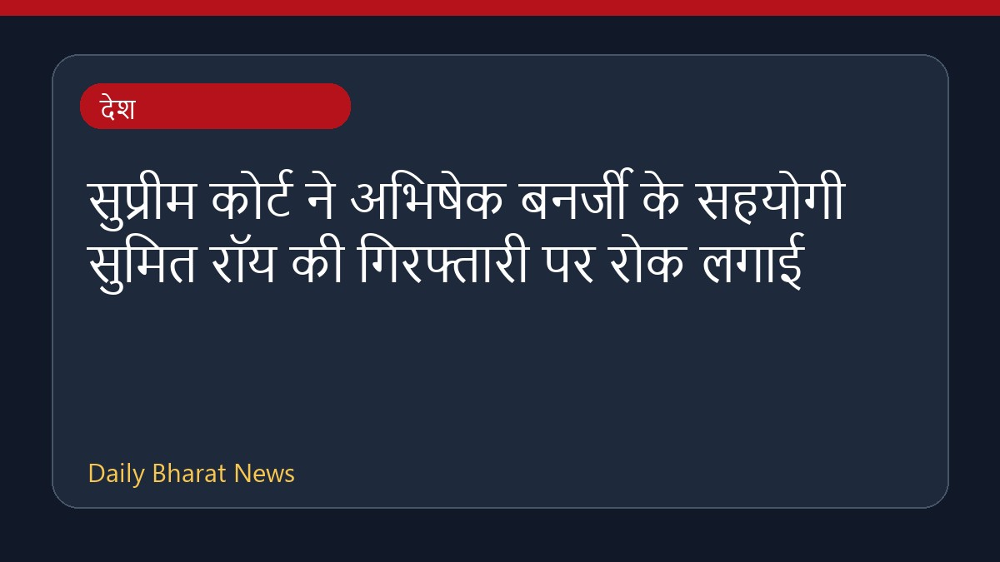

सुप्रीम कोर्ट ने अभिषेक बनर्जी के सहयोगी सुमित रॉय की गिरफ्तारी पर रोक लगाई

सुप्रीम कोर्ट ने साल्बनी भूमि हड़पने के मामले में अभिषेक बनर्जी के सहयोगी सुमित रॉय की गिरफ्तारी पर रोक लगा दी है। अदालत ने उन्हें जांच में सहयोग करने का निर्देश दिया है। इस बीच, पश्चिम बंगाल सीआईडी ने भूमि धोखाधड़ी और भ्रष्टाचार के मामलों की जांच अपने हाथ में ले ली है और गिरफ्तारी वारंट के साथ उनके आवास की तलाशी भी ली है। अदालत के इस अंतरिम आदेश से सुमित रॉय को बड़ी राहत मिली है।
मूल स्रोत: India News Sources
Supreme Court Stays Arrest Of Abhishek Banerjee's Aide Sumit Roy In Salboni Land-grab case - Live Law ↗
Supreme Court Stays Arrest Of Abhishek Banerjee's Aide Sumit Roy In Salboni Land-grab case - Live Law ↗